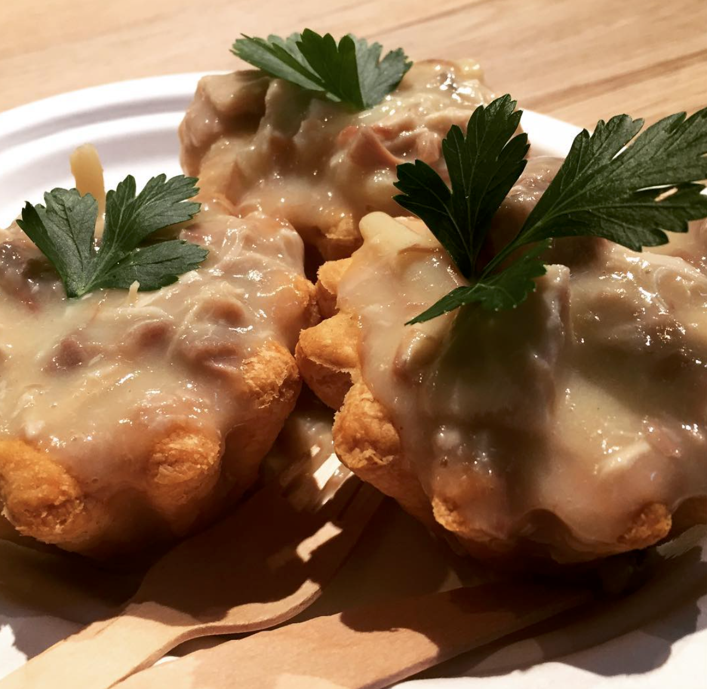
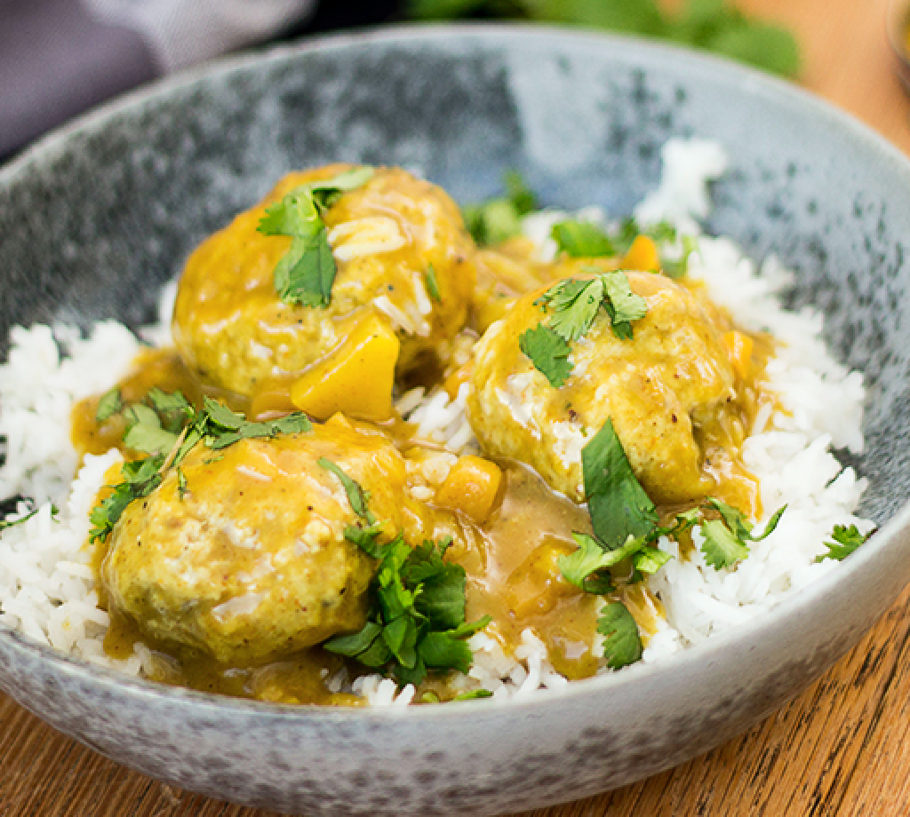
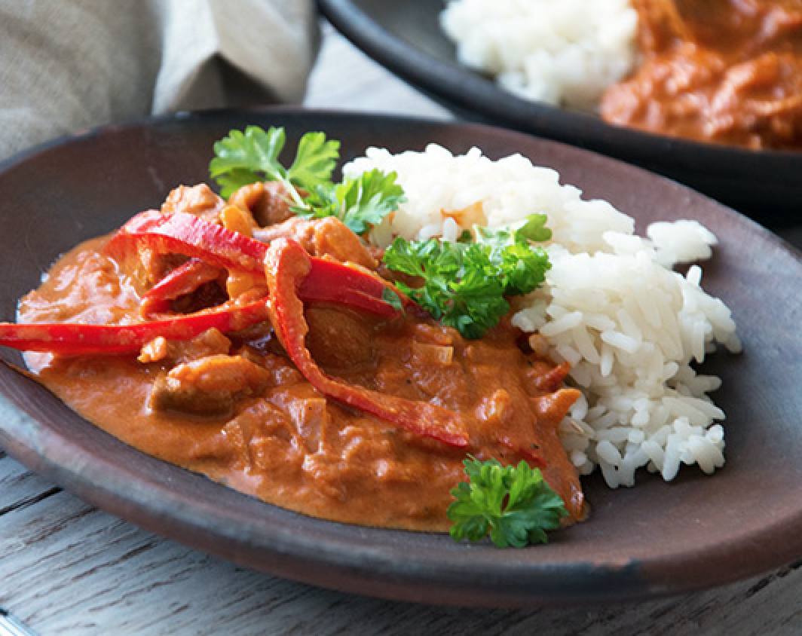

mormors køkken
Mormors køkken offers a great deal of delicious old-fashioned Danish dishes.
They offer great classics from the Danish kitchen.
The dishes change depending on the chef’s mood.
Below you can read the dishes currently on the menu.
Tarteletter
Patty shells with chicken and asparagus.
boller i karry
Meatballs in Curry served with rice.
The meatballs are made from ground pork.
Mørbradgryde
Pork tenderloin with mushrooms, paprika and mini sausages in a delicious cream sauce.